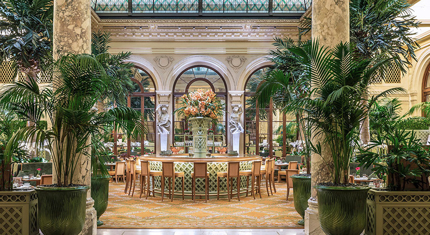

The Plaza has such a presence and history in New York, how could it not be haunted? There have been reports of shadowy figures, doors that refuse to open and disembodied voices.
Since it opened on the corner of Central Park South in 1908, The Plaza has been an institution in the worldwide hotel scene and has helped set the standard for luxury hotels in the United States. The elegant and grand building has hosted countless celebrities, dignitaries, and royals -- and been the setting of several Hollywood films. It should come as no surprise, then, that some departed guests would rather linger in the luxury hotel's hallways than move on to the afterlife. There have been spooky reports of disembodied voices, doors that suddenly refuse to open, and shadowy figures in hotel rooms.
"Some departed guests would rather linger in the luxury hotel's hallways than move to the afterlife."
Hotel guest claim that there is a ghost there who likes to tamper with the locks on the door either locking you out of your room, and on some occasions locking you in your room. There have also been claims of guests waking up in the middle of the night to either an extreme cold room or hot room. They claim that when they look at the thermostat box, that the temperature is either turned all the way up or all the way down. There have also been claims of guests hearing conversations in the hallways when no one is around.
_____________________________________________________